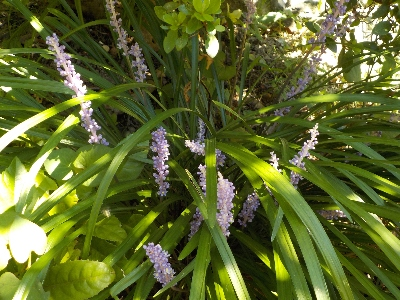
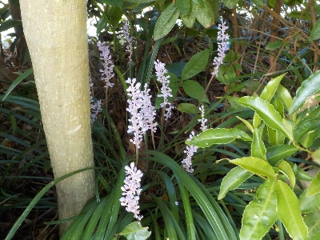

ヤブランの花は涼し気です。
更新日 : 2025/08/30

日陰に淡い色の花が咲いてるのでとっても涼しそう。
鉢植えでこんな状態を作りたいけど、日陰に置くから目立たないかもしれないな。
更新日 : 2025/08/30

日陰に淡い色の花が咲いてるのでとっても涼しそう。
鉢植えでこんな状態を作りたいけど、日陰に置くから目立たないかもしれないな。
更新日 : 2024/09/23

今年の夏は雨が少なくていろいろ枯れたんですが、ヤブランは茂みの中で成長してました。
ヤブランは強いですね。
花もキレイなので、増やしてあちこちに植えたいです。
ヤブランは蘭っぽいけど蘭ではないそうです。